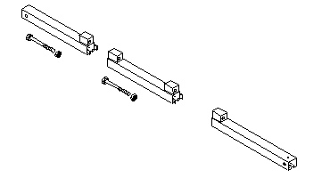

| NOTE: | The Universal Lift Hoist is assembled from parts stored in the Universal Lift Hoist Kit. Lift attachments specially designed for the vacuum pump are located in the cardboard box at the bottom of the TAC Cabinet. |
Illustration 2: Steel Rail Sections, Hex Bolts, and Hex Nuts
